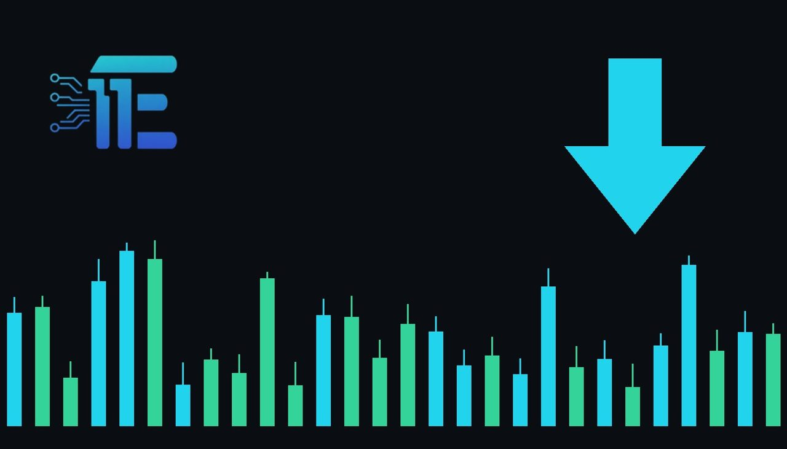

Fed Minutes Signal Potential Rate Hikes Over Inflation Concernsកំណត់ហេតុ Fed បង្ហាញការរំពឹងទុកដំឡើងអត្រាការប្រាក់ដោយសារបារម្ភពីអតិផរណា
XAU/USD impact: ▼ Bearishផលប៉ះពាល់លើ XAU/USD: ▼ ធ្លាក់

Minutes from the Federal Reserve's October meeting revealed that policymakers anticipate further interest rate increases amid inflation risks. Expectations of higher borrowing costs tend to bolster the dollar and weigh on gold.
កំណត់ហេតុពីកិច្ចប្រជុំខែតុលារបស់ Fed បានបង្ហាញថាមន្ត្រីរំពឹងថានឹងមានការដំឡើងអត្រាការប្រាក់បន្ថែមទៀតដោយសារហានិភ័យអតិផរណា។ ការរំពឹងទុកលើការដំឡើងអត្រាការប្រាក់នេះតែងតែជួយពង្រឹងដុល្លារអាមេរិក និងដាក់សម្ពាធលើមាស។
The Federal Reserve released the minutes from its October monetary policy gathering on Wednesday, documenting the discussions that led policymakers to hold the benchmark interest rate within a target range of 3.75% to 4%. Beyond the decision to pause, the records showed that central bank officials anticipate more rate hikes ahead, citing persistent worries regarding inflation risks and the potential economic impact of artificial intelligence.
ធនាគារកណ្តាល Fed បានចេញផ្សាយកំណត់ហេតុនៃកិច្ចប្រជុំគោលនយោបាយរូបិយវត្ថុខែតុលារបស់ខ្លួនកាលពីថ្ងៃពុធ ដោយកត់ត្រាការពិភាក្សាដែលនាំឱ្យមន្ត្រីសម្រេចរក្សាទុកអត្រាការប្រាក់គោលក្នុងចន្លោះពី 3.75% ទៅ 4%។ ក្រៅពីការសម្រេចចិត្តនេះ កំណត់ត្រាបានបង្ហាញថាមន្ត្រីធនាគារកណ្តាលរំពឹងថានឹងមានការដំឡើងអត្រាការប្រាក់បន្ថែមទៀតនៅពេលខាងមុខ ដោយលើកឡើងពីក្តីបារម្ភអំពីហានិភ័យអតិផរណា និងផលប៉ះពាល់សេដ្ឋកិច្ចនៃបញ្ញាសិប្បនិម្មិត។
For gold (XAU/USD), the transmission mechanism of hawkish Fed policy operates directly through the US dollar and interest rate expectations. When policymakers signal that additional rate increases may be needed, yields on interest-bearing assets rise, increasing the opportunity cost of holding non-yielding bullion. Simultaneously, expectations of tighter policy support the US dollar, which typically exerts downward pressure on dollar-priced commodities.
សម្រាប់មាស (XAU/USD) យន្តការនៃការបញ្ជូនឥទ្ធិពលពីគោលនយោបាយរឹតបន្តឹងរបស់ Fed ដំណើរការដោយផ្ទាល់តាមរយៈដុល្លារអាមេរិក និងការរំពឹងទុកលើអត្រាការប្រាក់។ នៅពេលមន្ត្រីបង្ហាញសញ្ញាថាការដំឡើងអត្រាការប្រាក់បន្ថែមអាចជាការចាំបាច់ ថ្លៃដើមឱកាសនៃការកាន់កាប់ទ្រព្យសកម្មមិនផ្តល់ការប្រាក់ដូចជាមាសនឹងកើនឡើង។ ជាមួយគ្នានេះ ការរំពឹងទុកនៃការរឹតបន្តឹងគោលនយោបាយក៏ជួយគាំទ្រដល់ដុល្លារអាមេរិក ដែលតែងតែដាក់សម្ពាធធ្លាក់ចុះលើទំនិញគិតជាប្រាក់ដុល្លារ។
Looking at market dynamics, sustained expectations of further monetary tightening generally keep precious metals under pressure as capital shifts toward yield-bearing assets. Conversely, gold could find renewed support if future economic releases show inflation cooling rapidly, which might lead central bank officials to reconsider future hikes and hold rates steady for longer.
ពិនិត្យលើទិដ្ឋភាពទីផ្សារ ការរំពឹងទុកជាបន្តបន្ទាប់លើការរឹតបន្តឹងរូបិយវត្ថុជាទូទៅដាក់សម្ពាធលើលោហៈធាតុមានតម្លៃ ដោយសារលំហូរទុនផ្លាស់ប្តូរទៅរកទ្រព្យសកម្មដែលមានការប្រាក់។ ផ្ទុយទៅវិញ មាសអាចទទួលបានការគាំទ្រជាថ្មី ប្រសិនបើទិន្នន័យសេដ្ឋកិច្ចនាពេលអនាគតបង្ហាញថាអតិផរណាថយចុះលឿន ដែលអាចនាំឱ្យមន្ត្រីធនាគារកណ្តាលពិចារណាឡើងវិញចំពោះការដំឡើងអត្រាការប្រាក់ និងបន្តរក្សាអត្រាការប្រាក់ឱ្យនៅថេរ។
Moving forward, traders will closely watch upcoming inflation metrics, employment reports, and public statements from Fed officials. Any confirmation of whether inflation risks warrant additional rate adjustments will be essential in defining the broader trend for both the US dollar and gold.
សម្រាប់ជំហានបន្ទាប់ អ្នកជួញដូរនឹងតាមដានយ៉ាងដិតដល់នូវទិន្នន័យអតិផរណា របាយការណ៍ការងារ និងការថ្លែងមតិពីសំណាក់មន្ត្រី Fed។ ការបញ្ជាក់ថាតើហានិភ័យអតិផរណានឹងជំរុញឱ្យមានការកែតម្រូវអត្រាការប្រាក់បន្ថែមឬយ៉ាងណា នឹងក្លាយជាកត្តាសំខាន់ក្នុងការកំណត់ទិសដៅសម្រាប់ទាំងដុល្លារអាមេរិក និងមាស។
Key takeawaysចំណុចសំខាន់ៗ
- Federal Reserve October minutes show officials anticipate further interest rate hikes.
- កំណត់ហេតុកិច្ចប្រជុំខែតុលារបស់ Fed បង្ហាញថាមន្ត្រីរំពឹងថានឹងមានការដំឡើងអត្រាការប្រាក់បន្ថែមទៀត។
- The central bank held its benchmark interest rate between 3.75% and 4% while citing inflation risks.
- ធនាគារកណ្តាលបានរក្សាទុកអត្រាការប្រាក់គោលចន្លោះ 3.75% ទៅ 4% ដោយសារការព្រួយបារម្ភពីអតិផរណា។
- Projections of higher interest rates support the US dollar and create headwinds for gold.
- ការរំពឹងទុកលើអត្រាការប្រាក់ខ្ពស់ផ្តល់ការគាំទ្រដល់ដុល្លារអាមេរិក និងបង្កើតសម្ពាធលើតម្លៃមាស។
Original commentary by THE MARKET CODE, based on public reporting from Finance. Written with the help of AI. Educational only, not financial advice.
មតិវិភាគដើមដោយ THE MARKET CODE ផ្អែកលើការរាយការណ៍សាធារណៈពី Finance។ សរសេរដោយមានជំនួយពី AI។ មាតិកាអប់រំប៉ុណ្ណោះ មិនមែនជាដំបូន្មានហិរញ្ញវត្ថុទេ។